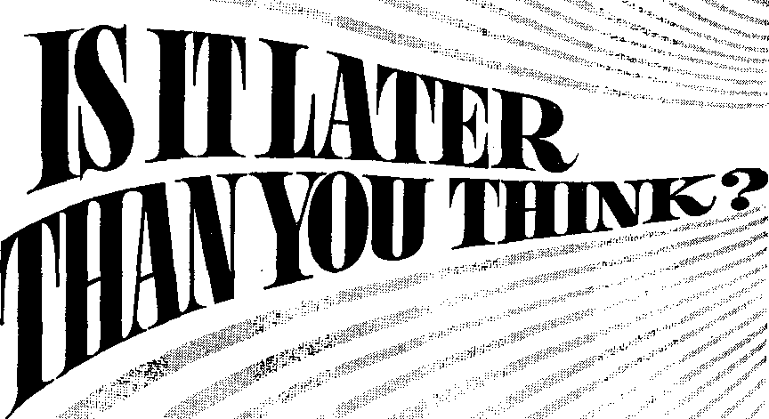
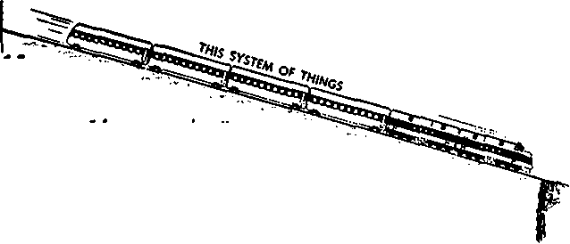
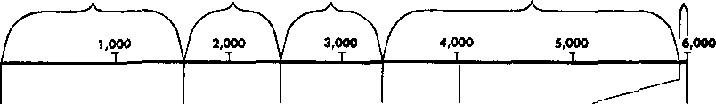

I
Is time running out for this generation? What will the 1970‘s brisg? <
THE REASON FOR THIS MAGAZINE
News sources that are able to keep you awake to the vital issues of our times must be unfettered by censorship and selfish interests. "Awake!" has no fetters. It recognizes facts, faces facts, is free to publish facts. It is not bound by political ties; it is unhampered by traditional creeds. This magazine keeps itself free, that it may speak freely to you. But it does not abuse its freedom. If maintains integrity to truth.
The viewpoint of "Awake!” is not narrow, but is international. “Awake!" has its own correspondents in scores of nations. Its articles are read in many lands, in many languages, by millions of persons.
In every issue “Awake!" presents vital topics on which you should be informed. It features penetrating articles on social conditions and offers sound counsel for meeting the problems of everyday life. Current news from every continent passes in quick review. Attention is focused on activities in the fields of government and commerce about which you should know. Straightforward discussions of religious issues alert you to matters of vital concern. Customs and people In many lands, the marvels of creation, practical sciences and points of human interest are all embraced in its coverage. "Awake!" provides wholesome, instructive reading for every member of the family.
"Awake!” pledges itself to righteous principles, to exposing hidden foes and subtle dangers, to championing freedom for all, to comforting mourners and strengthening those disheartened by the failures of a delinquent world, reflecting sure hope for the establishment of God's righteous new order in this generation.
Get acquainted with "Awake!" Keep awake by reading "Awake!"
Published Simultaneously* ix ihf. United States by THE WATCHTOWER BIBLE AND TRACT SOCIETY OF NEW YORK. INC. 117 Adams Street Brooklyn, N.Y. 11201, U.S.A.
ano in England
WATCH TOWER BIBLE AND TRACT SOCIETY
Watch Tower House, The Ridgeway London N.W. 7, England N. H. Knorr. President Grant Suites, Secretary
Average printing each issue: 5,150,000 5d * copy {AisValla, 5c; South Africa, J'/jc)
. Yearly subscription rates
Offices for semi mon t!iJy edition?
Autries, U.S., 11? Adams Street, Brooklyn, N.Y. 11201 51 AtstrtHi, 11 Beresford Bd.. Strath field, N.B.W, 2135 $1
Canada, 150 BririgslaiKl Ave.. Toronto 10. Ont $1 England, Watch Tower House,
The Ridgeway. Loudon N.W. 7
New Zealand, 021 New North ftf., Aitcklimd :> 90e
South Africa, Private Bag 2. P.O, ELndfifouteiu, Tv]. iOr
(Monthly editions cost fealf the above rates.)
Remittances for yi.ibacrlptlutib should be sent to the nftk* in your country. Otherwise aenrl your rem I Lu nee to Brooklyn. Notice of expiration is sent at ksji two ii=sirs btfoie H-uhseription expires.
Now published in 26 languages Semimonthly—Afrikaans. Cebuano, Danish, Dutch, English, Finnish. French, German. Greek, Iloko, Italian, Japanese, Korean, Norwegian, Portuguese, Spanish, Swedish, Tagalog, Zulu.
Monthly- 'Chinese, Clnjanju, Hiligajiiun, Sialajalam, Polisli, Tamil, I’kraEnian,
GRANGES OF ADDRESS should reach as thirty days before your moving date. Give its your old and new address (if possible, your old address label). Write Watch Tower, watch Tower House, The Ridgeway, London N.W. 7, England.
Enikii'ni second-class matter at Brooklyn, NY-Printed in England
The Blhlo translation regularly used In “Awake !1 h the Mew World Translation of the Holy Serlptures, 1961 edition When other translations are used, this Is clearly marked.
CONTENTS
“What’s This World Coming To?”
The Year 1914 a Turning Point
How Do We Know We Are in the “Last Days”?
The Sign of the “Last Days”
3 A Grand Future Ahead in God’s New Order!
5
A Time to 'Lift Up Your Head’ in Confident Hope
s What Will It Cost You?
17
23
27
*'lt is already the hour for you fo awake.” —Romon* 13:11 ^Zz
Volume XLIX
London, England, October 8, 1968
Number 19
7W/O WO/HO
“I s COM/Mt 70?
runaway train or
something—that the country has gone over the edge and there’s nothing I or anyone can do about it,” said a doctor in Los Angeles.
“Society is coming apart at the seams,” stated an office worker in Chicago. “It’s a murder epidemic,” declared a Negro student in Atlanta.
No doubt you, like most people, have been horrified by the increased crime, violence and assassinations in the United States. The Wall Street Journal of June 6, 1968, observed: “Many converged on the appalling and dark conclusion: American society is sick and frighteningly violent.” Combat of Paris said: “America is mad.”
However, the problem of growing troubles is not confined to just one country! In every nation on earth, including your own, serious difficulties are growing. If you live in a large city, do you not find that violence and crime are spreading? Do you not fear to walk down certain streets after dark? And when there is a knock at your door, do you not sometimes hesitate to open it until you find out if it is someone you know?
Even in formerly peaceful villages and rural areas, people are being shaken by
**«* °--
events, if not by the larger problems of their country, then by such things as the exploding immorality in their own neighborhood, or by the disruption of family life on a scale never before experienced.
It is a fact that everywhere the political, economic, religious and moral situations are deteriorating. That is why people all over the world, and likely you too, ask: “What’s this world coming to?”
An answer to this question was noted in U.S. News & World Report of June 3, 1968, when it said:
“A climax of some kind seems to be approaching the world over . . . It’s not the U.S. alone that's hit. Uprisings have erupted in France, in West Germany, in Spain, in ■Britain. Communist Eastern Europe is af
fected. So is Red China.”
Commenting on the fact that the problem is world wide, an editorial reprinted in the New York Times of June 10, 1968, stated:
"The American people will misread the meaning of Robert Kennedy’s death if they view it solely as a self-contained American tragedy. The tragedy is the result of the spillover of violence and volatile tensions from one part of the world to another. . . .
"We are at the end of the age of. purely national or even regional problems. Combustibles for setting the globe afire exist everywhere.”
Showing how rapidly world conditions now are building up to some sort of climax, this same editorial added:
“Throughout the entire world people are caught up in convulsive change. . . . Issues that formerly took a century or more to come to a boil are in constant eruption. Everything is being bunched up—-time, space, nations, peoples, issues. And everything has a fuse attached to it.
"The habits of nations, always variable, have become starkly irrational.”
The noted columnist Walter Lippmann also observes that a climax of some sort is approaching, saying in Newsweek of October 9, 1967:
"For us all the world is disorderly and dangerous, ungoverned and apparently ungovernable. Everywhere there is great anxiety and bewilderment. . ..
"This . . . marks, I believe, the historical fact that we are living through the closing chapters of the established and traditional way of life.”
World leaders sec these critical problems mounting. But they cannot find answers to them. As was said about United States President Johnson recently: “He has consulted the wisest men he knows and cannot figure out what else to do.” These leaders are much like the engineer on a runaway train speeding downhill. At the end of the hill there is a yawning canyon the bridge over which has been washed out. But the engineer cannot stop the train, for the brakes have failed! Disaster is certain.
What, then, does all of this world trouble mean? What is this world coming to?
Where can you find the answers to such questions? There is only one proven source, a source that this world’s leaders are ignoring. That source of answers is the Bible. In it God has had recorded for our benefit all the information we need to answer these questions. “All Scripture is inspired of God and beneficial for . . . setting things straight.”—2 Tim. 3:16.
What does the Bible show as to the meaning of all these world events? It shows that for this unrighteous world time is running out fast! It shows that within a few years at most there will take place a climax in human affairs so gigantic that it will affect every person on earth, every man, woman and child. It will, without fail, affect you.
What is this climax? God himself will take a direct hand in world affairs. He will use his overwhelming power to crush wickedness and wicked people. (Rev. 11: 18) This act of God is called “Armageddon” in some Bible versions.
This climactic act of God will bring to a sudden end all the trouble and troublemakers in the world today. It will pave the way for an entirely new system of things where people who love righteousness will find true freedom and relief from the horrifying conditions of today.
So what is this world coming to? The Bible answers: “The world is passing away and so is its desire, but he that does the will of God remains forever.” (1 John 2:17) Yes, this violent, crime-ridden, war-torn world is coming to its end! Time is fast running out for it! It is much later for this world than you may think! Indeed, it has only a few more years of existence left!
Actually, we have been living in a transition period since the year 1914. In that year, this system of things began its downward plunge. It became like that runaway train speeding toward a chasm where certain destruction awaits it.
1914
"LAST DAYS" BEGIN
THE year 1914 was not an ordinary year. According to
God’s timetable, that year really ushered in what the Bible calls the “last days” for this system
of things.—2 Tim. 3:1. statements of historians,
Notice just a few of the many statesmen and editorialists showing the significance of 1914 as an outstanding time marker, a turning point for mankind.
ARMAGEDDON
Normal times ended.
However, is this not just an “American” view? No, it is the view of authorities all over the world.
August 4, 1914, World War I began developing. But did not World War II mark an even greater turning point? No!
“The last completely 'normal' year in history was 1913, the year before World War I began,”—Washington, D.C., Times-Herald, March 13, 1949.
“Security and quiet have disappeared from the lives of men since 1914. And peace? Since 1914, the Germans have not known real peace nor has much of mankind.”—Konrad Adenauer, chancellor, West Germany, January 20, 1964. “in the year 1914 the world, as it was known and accepted then, came to an end. Far more than any year before or since was this the punctuation-mark of the twentieth century." —British author James Cameron in the book entitled “1914.” “If . . . the human race survives, some historian in the next century may well conclude that the day the world went mad was August 4, 1914.”—London Star, August 4, 1960.
“The first [world] war marked a far greater change in history. It closed a long era of general peace and began a new age of violence in which the second [world] war is simply an episode. Since 1914 the world has had a new character; a character of international anarchy. . . . Thus the first World War marks a turning point in modern history."—H. R, Trevor-Roper, British historian, August 1, 1954.
“It is indeed the year 1914 rather than that of Hiroshima which marks the turning point in our time, ... it was the first world war that ushered in the era of confused transition in the midst of which we are floundering."—Scientific Monthly, July 1951.
In addition to anarchy and confusion, 1914 brought the era of total war and of unprecedented insecurity.
Has the half century since 1914 seen any return to normalcy? Or has the plunge downward picked up speed? Consider the facts.
“The world os man knew if . . . wot forever ending, and from July 28 to August 4, 1914, the leaders and the led joined in pronouncing the death sentence. . , . World War I was the end of the Golden Age, the beginning of Total War.'' —Hanson W. Baldwin, American military analyst, July 26, 1964.
“If ever there was a year that marked the end of an era and the beginning of another, it was 1914. That year brought to an end the old world with its sense of security and began the modern age, characteristic of which is the insecurity that is our daily portion.”—A. L. Rowse, Oxford historian and biographer, June 28, 1959.
"A deterioration has been going on since the first World War."—Dwight D. Eisenhower, former president of the United States, September 13, 1965.
“Since 1914 civilization has constantly deteriorated. Nowadays it is on the verge of collapse.”—Newark News, November 20, 1960.
“We seem to leap from incident to incident. Suddenly there is a new emergency and men die. Since 1914, great empires have collapsed and nations hardly known then are now world problems. . . . We have tried war, appeasement, charity, diplomacy, the League of Nations, the United Nations. These efforts have failed. . . . Obviously something happened [in 1914] which altered the course of . . . life. That alteration has not been for the better.”—New York Journal-American, January 24, 1952.
But just because the year 1914 is recognized as a turning point, does that in itself make it the start of the “last days”? What confirms this conclusion?
Both in Bible chronology and in the events that were foretold to take place from 1914 onward we find confirmed beyond doubt that 1914 was the beginning of the end for this present system.
Briefly stated, in the Bible there is a remarkable prophecy concerning the number of years that God would allow the political nations uninterrupted rule over earth’s affairs. The time allotted by God would be 2,520 years altogether.
When did this period of 2,520 years begin? It began when God permitted the nation of ancient Israel to be overthrown by Babylon. That was in the year 607 B.C.E. Thus, the “appointed times of the nations,” as Jesus Christ later called them, began.—Luke 21:24.
When did these 2,520 years end? Counting from 607 B.C.E. to 1 B.C.E. would be 606 full years; from 1 B.C.E. to 1 C.E. is one year; and from C.E. 1 to C.E. 1914 is 1,913 years. Thus, 606 plus 1 plus 1,913 gives us 2,520 years, ending in 1914.1
However, is this prophecy relating to chronology the only proof that 1914 marked the beginning of the “last days”? No. There is far more to the matter than that. Consider what came with that date 1914.
HOW can we be sure we are living in the period of time called the “last days”? Aside from chronology, what definite proof is there that this era began in the year 1914? How long a time is covered by it? When will it end?
The phrase “last days” comes from Bible prophecy such as that recorded at 2 Timothy chapter 3, verse 1, where the apostle Paul states: "In the last days critical times hard to deal with will be here.” It is the same time period that Jesus Christ referred to when his disciples asked him what the sign “of the conclusion of the system of things” would be. —Matt. 24:3.
This time period has a definite beginning and a definite end. It is similar to the last day of a week, which has a definite beginning at midnight and a definite end twenty-four hours later. During the time period of the "last days” certain events would take place, after which God would bring the period to an end by crushing out of existence this present wicked world.
The events that Jesus, the apostle Paul and other Bible writers bring to our attention were all to take place within the same generation. (Matt. 24:34) These events would identify which generation’s lifetime would embrace the “last days,” much as your fingerprint identifies you. Your fingerprint contains a pattern of marks, or lines, different from what any other person has. Likewise, the "last days” contain their own pattern of marks, or events, that all come together to form a "fingerprint” that cannot possibly belong to any other generation.
Remember, however, that it is not just one of these events by itself that is crucial, although each is highly significant. All of them must come together in the same generation, like the different lines that come together on one of your fingers to form your fingerprint.
Before describing these identifying events, Jesus cautioned: "You are going to hear of wars and reports of wars; see that you are not terrified. For these things must take place, but the end is not yet.” (Matt. 24:6) True to his words, such things did happen for centuries after the time when Jesus was on earth.
Then, Jesus began listing the worldshaking events that would constitute a "sign” marking the beginning and duration of the "last days.” (Matt. 24:3) Let us now examine some of these events, and others foretold in the Bible, that make up this sign. Observe how they have been undergoing fulfillment since 1914.
THE SIGH OF THE "LAST HAYS"
WORLD WARS'.,
foodshortages
PESTILENCES <
EARTHQUAKES
INCREASED LAWLESSNESS FEAR
"[World WarlJ killed more men than any previous war, and if was the first war to suck in whole nations, including civilians.”—Life, March 13, 1964.
"In Its scope, its violence, and above all, in its totality, it established a precedent. World War I ushered in the century of Total War, of —in the first full sense of the term—global war. . . . Never before 1914-1918 had a war absorbed so much of the total resources of so many combatants and covered so large a part of the earth. Never had so many nations been involved. Never had the slaughter been so comprehensive and indiscriminate."—World War I, by Hanson W. Baldwin, 1962.
"Two World Wars have left a legacy of dead which number more than all the armies engaged in any war that made ancient or medieval history. No half-century ever witnessed slaughter on such a scale, such cruelties and inhumanities, such wholesale deportations of peoples into slavery, such annihilations of minorities." —Mr. Justice Jackson at Nuremberg trial of Nazi war criminals, in Tyranny on Trial, by Whitney R. Harris, 1 954.
The areas in color get less than a minimum adequate diet
"During and after the 1914-1918 war famine conditions were widespread in many parts of Europe. Millions died in the Russian famine alone,"—Encyclopedia Britannica, 1 946.
“After World War II, there occurred the greatest world-wide shortage of food in history.”—World Book Encyclopedia, 1966.
"The world food situation is now more precarious than at any time since the period of acute shortage Immediately after the Second World War.”—B. R. Sen, Director General of
United Nations Food and Agriculture Organization, 1966.
“Every 8.6 seconds someone in an underdeveloped country dies as a result of illness caused by malnutrition. . . . 10,000 every day. Over 3,500,000 every year."—New York Times, December 29, 1967.
"Everyone admits that more than half of the world is undernourished, with many starving." —Natural History, May 1968.
“No recorded pestilence before or since has equaled the 1918-1919 death toll in numbers. In those two years an estimated 21,000,000 died of influenza-pneumonia throughout the world, some 850,000 in the United States alone."—The Saturday Evening Post, September 26, 1959.
“The influenza epidemic of 1918 . , , was a pandemic (universal in scope], a brutal and savage killer that stalked the world, respecting neither race nor color nor age. ... In Alaska, entire Eskimo villages were wiped out before help could arrive. In India, where five million persons died, burning ghats and burial grounds were piled with corpses. . . . Only two places in the world escaped: St. Helena in the South Atlantic and Mauritius, a small island in the Indian Ocean."—Today's Health, October 1967.
"More people are chronically ill for longer periods and with less relief than ever before." —New York Post, December 6, 1967.
Disease and pestilence continue to rage. Millions die each year from cancer and heart trouble. Venereal disease is spreading rapidly. Cholera, typhoid and other epidemics occur in country after country, especially in Asia, Africa and Latin America.
“In this century earthquakes have killed more than 900,000 people.’’ —C hanging Times, May 1968.
In 1915, 30,000 were killed at Avezzano, Italy. In 1920, 180,000 died in Kansu, China. In 1923, 143,000 perished in Tokyo-Yokohama, Japan. In 1935, 60,000 were killed in Quetta, India. In 1939, 23,000 died in Erzincan, Turkey.
In 1950 a gigantic quake, one of the most violent ever, ripped mountains to pieces in Assam, India.
In this decade alone—1960: 5,700 were killed in Chile; 12,000 in Morocco. 1962= 10,000 died in Iran. 1963: Skoplje, Yugoslavia, and El Merj, Libya, largely destroyed. 1964: Gigantic quake in Alaska unleashed 400 times more energy than ail nuclear bombs ever exploded. 1965: Devastation in Chile, El Salvador. 1966: 3,000 were killed in eleven nations,- large part of Tashkent, Russia, destroyed. 1967: Quakes rocked Chile, Colombia, France, Indonesia, Turkey, Venezuela.
“A plague of lawlessness and violence ... is now sweeping the globe.”—New York Times, June 6, 1968.
“Discord and violence now are emerging . . . from one end of the globe to the other,” —U.S. News & World Report, June 10, 1968.
“No Filipino is safe in the streets today. . . . thrill killing, vandalism, and general mayhem is steadily increasing.”—Philippine Islands Weekly Graphic, May 13, 1964.
“We can't have even one day of peaceful life in Seoul because in the evenings the streets become streets of terror."—South Korean Chosun Daily, April 14, 1964.
"Violent crime is now running wild ... a virtual explosion of crime. . . . Rising disorder, drift to anarchy and mounting lawlessness. Being loosed on the streets in city after city is a wave of violent crime—murder, rape, assault. Racial violence, accompanied by arson and looting on a huge scale, sweeps urban areas as police stand by helplessly."—U.S. News * World Report, August 9, 1965; June 17 1968.
"There hqs been a tremendous and disturbing increase in the number of crimes carried out by young people today. ... It has occurred in many countries throughout the world."—The Psychology of Crime, by David Abrahamsen, 1960.
“Almost everywhere, including Soviet Russia, there appears to be an iaatease w ctime, ■arid particularly, alas, in juvenile crime."—U.S. News & World Report, November 1, 1965.
"The ‘teenage culture' ... is a rebellious, oppositional society, dedicated to the proposition that the grownup world is a sham."—The Challenge of Crime in a Free Society, 1 967. rather than conviction ... of the pleasant life rather than the meaningful life. . . .
“Most of us . . .
love money much more than any of the things it will buy. It is not a means to an . end for us, it is a pas' sion.”—The Paper
Economy, by David T. “ Bazelon, 1963.
"In our investigations we've found, as an average, that one out of every three employees is basically dishonest—which means he will seek ways of stealing; that [another] one out of every three employees will be dishonest if given the opportunity."—Toronto manager of Pinkerton's Detective Agency, in Canadian Weekly, September 7-13, 1963.
"Our greatest danger is in the decline in religious conviction and moral character, . , . It’s reached a level that should be a great concern."—Michigan Governor George Romney, Look, September 24, 1963.
“Adultery seems to be as widely practiced as it must have been in the orgiastic days before the Flood."—Pageant, August 1957.
"Not only have vast numbers of Americans lost all sense of the sacred, the moral, and the ethical, but the spiritual leaders from both the laity and the priesthood are often found in the forefront of this irreligious pursuit of comfort
"The criticisms of God rank well above almost all other criticisms of the hour. More people—in more ways and on more occasions—cast doubt, hurl darts, and throw charges against God such as this country has never seen in all of its history.”—United States Senator Frank Carlson, June 19, 1968.
"We are not living in ordinary times. . . . The morals with which we have grown up are being cast aside . . . God has been dethroned; sex has been deified."—Brisbane, Australia, Courier-Mail, June 15, 1964.
"The church has rarely been poorer spiritually than if is today ... as unlike the apostolic church of the first century, of the Bible concept of the church of Christ, as is possible to find. . . . A cursory reading of the New Testament would show that . . , we strain at gnats and swallow camels."—Two clergymen in Toronto Star Weekly, March 28, 1964.
"The majority of our people are members of the Church, but are really unbelievers. . . . The spork of faith perhaps still alive in them has been smothered by their association with the Church."—Lutheran Church booklet Mit einander fur einander beten ("Praying with One Another and for One Another"), Germany, 1963.
"The church mouths its pious phrases . . . but it fulls its people to sleep.” People are leaving the churches "because they are looking at the lives of the church as we are living it and they are seeing how phoney it is,”-—Professor of religious education, in The Christian Index, December 14, 1967.
"The fact is that today the biggest single emotion which dominates our lives is fear." —David Lawrence, U.S. News & World Report, October 11, 1965.
"At all levels of American life, people share similar fears, insecurities and gnawing doubts to such an intense degree that the country may in fact be suffering from a kind of national nervous breakdown.”—The National Committee for an Effective Congress, December 25, 1967.
"More than 120 million Americans would die
in the event of a Soviet missile attack ... if it were to include urban centers, . . . the death toll would be 149 million." —United States Secretary of Defense, N. Y. Times, February 19, 1965.
"We are rapidly destroying our planet as a. "This planet is approaching 'a crisis which habitat for [man]."—Natural History, May may destroy its suitability as a place for human 1968. society.’ . . ,
‘’Man and his works are disrupting the numerous complex and interrelated processes upon which this planet’s web of life depends. Thus earth’s supply of available oxygen is being depleted . . . large bodies of water are steadily being fouled . . . the precarious balance of nature is being disturbed on a scale without precedent,"—N. Y. Times, January 1, 1968.
“THIS GOOD NEWS OF THE KINGDOM WILL BE PREACHED IN ALL THE INHABITED EARTH FOR A WITNESS TO ALL THE NATIONS; AND THEN THE END WILL COME/'-Matt. 24:14.
"Jehovah’s witnesses have literally covered the earth with their witnessing. ... It may be truly said that no single religious group in the world displayed more zeai and persistence in the attempt to spread the good news of the Kingdom than the Jehovah’s witnesses."—These Also Believe, by Charles S. Broden, 1950.
"All religion is anathema to the Soviets. . . . nothing infuriates them quite as much as do Jehovah’s witnesses. . . . Pravda reports that the Witnesses are becoming increasingly active. . . . Faith is spreading, and all the mighty resources of the state seem unable to destroy it.” —Toronto Daily Star, July 2, 1960.
"The demand for Bible literature about God’s kingdom on the part of the people throughout the earth has been so great in the last twenty years that it has been necessary for the Watch Tower Society to print more than 100 million bound books and more than 325 million booklets . . . more than 1,300,000,000 Watchtower magazines and more than 1,100,000,000 Awake! magazines. . . , Jehovah’s witnesses are preaching the good news of God’s kingdom in 197 lands and islands of the sea. Their Bible literature now appears in 165 languages.” —1968 Yearbook of Jehovah’s Witnesses, page 29.
There are many other features of the sign marking the “last days." But the ones listed above are sufficient to show how Bible prophecy has been fulfilled.
However, some persons may here state: ‘Well, wars, famines, pestilences, earthquakes, crime—these are all features of human living in every age. It would not be difficult for anyone to predict that they would occur again. And, such a prophecy could apply to many periods.*
Is this true? No, it is not, as thoughtful reasoning will show. It is one thing to foretell such events or conditions, it is another thing to foretell them on the scale indicated, as affecting the entire globe; to foretell that they would occur concurrently in only one generation; to foretell that they would come at the time indicated in Bible prophecy. That is why the publishers of this magazine called attention to the year 1914 as far back as 1879, pointing out that disastrous conditions would begin then. Indeed, fifty-four years ago, the New York World of August 30, 1914, said:
"The terrific war outbreak in Europe has fulfilled an extraordinary prophecy. For a quarter of a century past, through preachers and through press, the ‘International Bible Students’ . . . have been proclaiming to the world that the Day of Wrath prophesied in the Bible would dawn in 1914. ’Look out for 19141’ has been the cry ... of the evangelists.’’
Yet, while these witnesses of Jehovah were proclaiming that 1914 would bring the worst time of trouble in history, what were others saying? In the book 1913: America Between Two Worlds [1962J author A. Valentine notes: “Secretary of State Bryan said [in 1913] that ‘conditions promising world peace were never more favorable than now,' and Andrew Carnegie said war with Germany had never ‘even been imagined? ”
Thus, right up to the very brink of World War I, prominent world leaders were forecasting an age of social unity and enlightenment. If the conditions that have come since 1914 were easily predictable, then why did not such men foresee them and sound the warning?
Still, some object and say: ‘Oh, it’s only the population increase and better reporting methods that make things seem so much worse today? An answer to this comes from the following news report:
“Washington, May 31 (AP)-—FBI Director J. Edgar Hoover assailed today those who attempt to minimize the nation’s crime problem by blaming it on the large increase in the youthful population and fuller tabulations by police. . . . He said those who try to ‘explain away the shocking truth behind crime statistics’ are doomed to failure.”
So do not misread the evidence. It is all there, and it is positively overwhelming, particularly so because the evidence has continued in force for more than half a century now’ And if ail this is not the fulfillment of Bible prophecy concerning the "last days,” then what does it require? What more could be expected in the way of fulfillment?
For your own welfare, you should face the fact that all the many lines of the "fingerprint” for the “last days” stand out sharply, crystal clear. They allow for only one meaning: that we have been in the "last days” since 1914!
Crucial questions now arise: Is there any indication in God’s timetable as to how much time there is left before this system of things comes to its end? Can we know how many more years remain for this violent system of things?
TDMujill t/ie
THE fact that fifty-four years of the period called the "last days” have already gone by is highly significant. It means that only a few years, at most, remain before the corrupt system of things dominating the earth is destroyed by God. How can we be so certain of this?
One way is by noting what Jesus said when he gave his great prophecy about the “last days.” After he listed the many events that would mark this period, he also stated: “Truly I say to you that this generation will by no means pass away until all these things occur.”—Matt, 24:34.
Jesus was obviously speaking about those who were old enough to witness with understanding what took place when the “last days” began. Jesus was saying that some of those persons who were alive at the appearance of the 'sign of the last days’ would still be alive when God brought this system to its end.
Even if we presume that youngsters 15 years of age would be perceptive enough to realize the import of what happened in 1914, it would still make the youngest of ■‘this generation” nearly 70 years old today. So the great majority of the generation to which Jesus was referring has already passed away in death. The remaining ones are approaching old age. And remember, Jesus said that the end of this wicked world would come before that generation passed away in death. This, of itself, tells us that the years left before the foretold end comes cannot be many.
6,000 Years Nearing Completion
There is another way that helps confirm the fact that we are living in the final few years of this “time of the end.” (Dan. 12:9) The Bible shows that we are nearing the end of a full 6,000 years of human history. What significance does this have?
When God gave his laws to ancient Israel, one of those laws involved keeping the sabbath day holy. On the seventh day of the week there was to be no labor. The people were to rest from all their toil. (Ex. 20:8-11) The Bible states that “the Law has a shadow of the good things to come." —Heb. 10:1.
Revelation chapter 20, verse 6, shows that God’s heavenly kingdom will rule over the earth for one thousand years after the end of this system of things. That millennium will bring a sabbathlike rest to the earth and all those then inhabiting it. Hence, the first six thousand years since man’s creation could be likened to the first six days of the week in ancient Israel. The seventh one-thousandyear period could be likened to the seventh day, the sabbath, of that week.—2 Pet. 3:8.
How fitting it would be for God, following this pattern, to end man’s misery after six thousand years of human rule and follow it with His glorious Kingdom rule for a thousand years! This Kingdom Christians have prayed for during many centuries.—Matt 6:10.
When Do 6,000 Years End?
How can it be determined when 6,000 years of human history will end?
According to reliable Bible chronology, Adam and Eve were created in 4026 B.C.E.2 From the autumn of
4026 B.C.E. to 1 B.C.E.....4,025 years
1 B.C.E. to 1 C.E.....................1 year
1 C.E. to 1968 C.E........... 1,967 years
Total to autumn 1968 .... 5,993 years This would leave only seven more years from the autumn of 1968 to complete 6,000 full years of human history. That seven-year period will evidently finish in the autumn of the year 1975.
Does this mean that the above evidence positively points to 1975 as the time for the complete end of this system of things? Since the Bible does not specifically state this, no man can say. However, of this we can be sure: The 1970’s will certainly see the most critical times mankind has yet known. The deterioration in human relations—within families, communities, cities and nations, and between nations —will worsen, not improve. (2 Tim. 3:13) If the 1970’s should see intervention by Jehovah God to bring an end to a corrupt world drifting toward ultimate disintegration, that should surely not surprise us.
If you feel that this is painting the picture too darkly, consider what warnings the hard facts have forced even men of this world to express. They sense that disaster is approaching, but, lacking the Bible’s guidance, they do not know what to do about it. That is why U.S. News <£ World Report of June 10, 1968 said:
"What is developing, as many experts see it, is an era of confusion and doubts unlike anything experienced.”
6,000 YEARS OF HUMAN HISTORY ENDING IN 1975
1,696 YEARS 857 YEARS 906 YEARS 2,520 YEARS 61 YEARS
4026 B.C.E., 2370 B.C.E., 1513 B.C.E., 607 B.C.E., 29 C.E., 1914 C.E., 1975 C.E.,
MAN'S CREATION NOACHIAN ISRAEL’S EXODUS JERUSALEM JESUS ‘‘LAST DAYS" END OF
FLOOD FROM EGYPT DESTROYED BAPTIZED BEGIN 6,000 YEARS
Concerning political instability, former U.S. Secretary of State Dean Acheson said in 1960: “I know enough of what is going on to assure you that, in 15 years from today [or, by 1975], this world is going to be too dangerous to live in.” And of the struggle between communism and capitalism, Intelligence Digest of August 1967 said: “The facts . . . show that the forces in the world struggle are grouping themselves for a decisive show-down.”
Everywhere national currencies are in trouble. Alfred Shaefer, chairman of Switzerland’s Union Bank, said in 1968: “Everywhere you see a shakiness. Time is running out. Something disagreeable could happen at any time.”
Large cities are in such a state of affairs that efforts to patch them up have proved hopelessly insufficient. The air, water and land are becoming polluted to the point of saturation. Transportation in many nations is a major killer, and the crush of traffic often paralyzes major cities for hours. Schools and colleges are in a dilemma as to maintaining order.
Drug addiction and immorality have reached unimagined extremes. Law enforcement becomes increasingly difficult, with the public often apathetic toward corruption and even showing violent animosity toward the police. In the United States, firemen are frequently attacked when answering fire calls.
Nor can the religious systems of Christendom stem the tide, for they too are in a state of growing chaos. An Associated Press dispatch on November 24, 1967, reported:
‘‘Christian theology . . . today is in a state of chaos, many of its experts admit. Today, we are at the end of a theological era, with the old theological systems a shambles,’ says the Rev. James I. McCord, president of Princeton Theological Seminary."
One of the greatest problems, beyond man's solving, is the coming food shortage due to the population explosion. In the book Famine—1975! food experts W. and P. Paddock state:
“By 1975 a disaster of unprecedented magnitude will face the world. Famines, greater than any in history, will ravage the undeveloped nations.”
“I forecast a specific date, 1975, when the new crisis will be upon us in aM its awesome importance.”
"By 1975 civil disorder, anarchy, military dictatorships, runaway inflation, transportation breakdowns and chaotic unrest will be the order of the day in many of the hungry nations.”
And the Arizona Republic said on June 2, 1968, that Professor R. Heilbroner of New York "predicted that in the early 1970’s, ‘the greatest catastrophe the world has ever known’ will occur when population far outstrips the available food supply.”
Just a ‘Passing Phase’?
Some will object and say that these distressing conditions are just a ‘passing phase’ in world affairs. Things will straighten out and the present systems will gradually improve,’ they may say.
But on what basis can you believe this? Have men successfully coped with these conditions, or, to the contrary, has history and your own personal experience proved that these conditions have worsened?
Ask yourself: What is the trend? Are men becoming less selfish and more loving? Are they becoming less ambitious and proud? Are they tending toward greater humility, greater love for their neighbor and concern for his welfare? Is there less violence, less hatred in the world? Is it more peaceful, less dangerous?
The facts answer, No! He is not solving his problems. Instead, his management of earth is producing crises of ever greater proportions. So why believe that conditions under man’s rule will improve? Why not face the facts as stated in the Bible that this present system is headed for a crash, but that before it goes to pieces completely from its own badness, Almighty God is going to step in and execute his judgment upon it?—Jer. 25:31-33; Rev. 18:1-8; 19:11-21.
Change Ahead in World Government
It is very appropriate for God to bring an end to man’s rule. On their own, independent from God, men and nations have brought ever greater disaster to the human family. Unable to get what they want by legitimate and just means, they have drenched the earth with the blood of innocent people.—Isa. 26:21.
Editor David Lawrence acknowledged on September 25, 1967: “Unhappiness on earth is man-made. Our key weakness is that we have not solved the problem of self-government.” And the editor of Intelligence Digest admitted in August of 1967: “Only God can settle world affairs. The materialistic concept that, by his own
unaided efforts, man can establish lasting peace is directly contrary to Christian teaching.”
However, since the majority of humans and their leaders do not really want God as their ruler, they will have to be taken out of the way. That is why Bible prophecy says of our time: “In the days of those kings the God of heaven will set up a kingdom that will never be brought to ruin. And the kingdom itself will not be passed on to any other people. It will crush and put an end to all these kingdoms, and it itself will stand to times indefinite." (Dan. 2:44) What a relief this will bring to those who are sick of all the bloodshed, strife and corruption!
Those who submit to God’s requirements will be protected by him through the coming Armageddon destruction of this system of things. He promises: “Seek Jehovah, all you meek ones of the earth, who have practiced His own judicial decision. Seek righteousness, seek meekness. Probably you may be concealed in the day of Jehovah’s anger.”—Zeph. 2:3.
After the end of this system of things, then what? A new day will dawn for the human family! Armageddon survivors will begin to enjoy all the benefits of a righteous new order. Just what will conditions be like on earth then? What blessings will flow to the human family during this 1,000-year rule of God’s kingdom? For your own encouragement, examine these conditions and benefits in the light of God’s promises.
WHEN God puts an end to this present system of things shortly, it will pave the way for his clean new order for earth. Armageddon will rid the earth of war, violence, crime and injustice. Divisive governments, religions and economic systems will be gone forever.
With God’s heavenly kingdom the only government ruling over the earth, God’s supreme power for doing good will be manifested by his showering down blessings on those of mankind who will live in tha't new order. Following are a few heartwarming prophecies from God’s Word. Many of them find their fulfillment primarily in a spiritual sense now among God’s servants. But they also foretell literal and physical blessings.
Who wifi bring total disarmament? "[God] is making wars to cease to the extremity of the earth."—Ps. 46:9.
All survivors of Armageddon will have already done this: “They will have to beat their swords info plowshares and their spoors into pruning shears. Nation will not lift up sword against nation, neither will they learn war any more.”—Isa. 2:4.
Why will that peace know no future disturbance? “Evildoers themselves will be cut aff, . . . the wicked one will be no more."—Ps. 37: 9, 10.
Neither will animalistic men nor literal beasts then be a danger.
“The wolf will actually reside for a while with the male lamb, and with the kid the leopard itself will lie down, and the calf and the maned young lion and the well-fed animal all together,- and a mere little boy will be leader over them. And the cow and the bear themselves will feed; together their young ones will lie down. And even the lion will eat straw just like the bull. And the sucking child will certainly play upon the hole of the cobra; and upon the light aperture of a poisonous snake will a weaned child actually put his own hand. They will not do any harm or cause any ruin.”—Isa. 11:6-9.
l O’
< *3’4
2‘M'j
for them ! shall certainly conclude a covenant in
“And
in security.”—Hos. 2:18.
down
that day in connection with the wild beast of the field and with the flying creature of the heavens and the creeping thing of the ground, ... I will make them lie
All persons will become healthy, spiritually, mentally and physically.
“At that time the eyes of the blind ones will be opened, and the very ears of the deaf ones will be unstopped. At that time the lame one will climb up just as a stag does, and the tongue of the speechless one will cry out in gladness.” —Isa. 35:5, 6.
"And [God] will wipe out every tear from their eyes, and death wilt be no more, neither will mourning nor outcry nor pain be any more."—Rev. 21:4.
God’s power can even reverse the aging process.
"Let his flesh become fresher than in youth; let him return to the days of his youthful vigor." —Job 33:25.
"The gift God gives is everlasting life by Christ Jesus our Lord."—Rom, 6:23.
"Everyone exercising faith in him might . . . have everlasting life."—John 3J6.
Even the dead will come back from the grave.
“The hour is coming in which all those in the memorial tombs will hear his voice and come out." —John 5:28, 29.
"The sea gave up those dead in it, and death and Hades [the grave] gave up those dead in them."—Rev. 20:13.
The fruits of good works (Gal. 5:22, 23) will be matched by earthly fruitfulness.
“The mountains and the hills themselves will become cheerful before you with a joyful outcry, and the very trees of the field will all clap their hands. Instead of the thicket of thorns the juniper tree will come up. Instead of the stinging nettle the myrtle tree will come up.’’ —Isa. 55:12, 13.
“The wilderness and the waterless region will exult, and the desert plain will be joyful and blossom as the saffron.’’—Isa. 35:1.
“You will be with me in Paradise.”—Luke 23:43.
Malnutrition and famine will be things of the past.
“Jehovah of armies will certainly make for all the peoples ... a banquet of well-oiled dishes, a banquet of wine kept on the dregs, of well-oiled dishes filled with marrow."—Isa. 25:6.
“There will come to be plenty of grain on the earth,- on the top of the mountains there will be an overflow." —Ps. 72:16.
"Pouring rains of blessing there will prove to be. And the tree of the field must give its fruitage, and the land itself will give its yield, and they will actually prove to be on their soil in security."—Ezek. 34:26, 27.
“The earth itself will certainly give its produce; God, our God, will bless us.”—Ps. 67:6.
No slums; no crowded living conditions.
They will certainly build houses and have occupancy . . . They will not build and someone else have occupancy; they will not plant and someone else do the eating. . . . the work of their own hands my chosen ones will use to the full. They will not toil for nothing, nor will they bring to birth for disturbance."—Isa. 65:21 -23,
No need for protective bars and locks.
’'They will actually sit, each one under his vine and under his fig tree, and there will be no one making them tremble."—Mic. 4:4.
Surely you want to live in such a wonderful new order as God’s Word describes. Think of it—no more war, crime, violence, poverty, hunger, poor housing or sickness!
What a blessing these conditions will be for those who sincerely love righteousness! And under God’s loving administration by his appointed King, Christ Jesus, all mankind will become one united, happy family. From heaven, this righteous rulership will guide, assist and prosper the activities of those who make up the new earthly arrangement of things. Fulfilled will be the Bible prophecy: “There are new heavens [God’s kingdom] and a new earth [righteous human society] that we are awaiting according to his promise, and in these righteousness is to dwell.” —2 Pet. 3:13.
The new system will certainly fulfill the promise given through the psalmist, who said of the loving Creator: “You are opening your hand and satisfying the desire of every Jiving thing.” (Ps. 145:16) AU the proper desires of God-fearing persons will be completely realized under the rule of the Kingdom government. Not only peace, prosperity and health, but also the enjoyment of living among people who are honest, decent, loving and helpful.
Nor will this enjoyment be temporary. It will not be cut short by death after seventy or eighty years of life. For God's Word guarantees the elimination of death, saying: “He will actually swallow up death forever, and the Lord Jehovah will certainly wipe the tears from all faces.” (Isa. 25:8) “The righteous themselves will possess the earth, and they will reside forever upon it."—Ps. 37:29.
Even those in the graves will have an opportunity for life in God’s new order, for “there is going to be a resurrection of both the righteous and the unrighteous.” (Acts 24:15) In this way the resurrected dead will be in position to prove their loyalty to God and be found worthy of living forever in that restored paradise.
But will not this planet become too crowded with so many millions coming back in the resurrection? No, that will not be the case. Keep in mind that the Creator of the universe regulates the thousands of millions of heavenly bodies with a precision that inspires awe in man. Surely God is capable of determining and regulating a far smaller number of people to live comfortably on earth. There will be no problem of overcrowding to mar the happiness of that new order. Jehovah will solve any problem that, could arise. Hence, we can confidently say; “O Jehovah of armies, happy is the man that is trusting in you.”—Ps. 84:12.
Living then will be true living, in the way the Creator purposed, free from the frustration, irritation, disagreeableness and anxiety that characterizes the lives of millions today. That is why the Bible describes the condition of persons then in this way: “The meek ones themselves will possess the earth, and they will indeed find their exquisite delight in the abundance of peace.” (Ps. 37:11) Yes, those living in that new order will experience such deep peace and contentment that every day will be an “exquisite delight” to them.
Do you not agree that God’s purpose for earth and man in the near future is inspiring? Certainly nothing that any man, organization or government on earth today has done or ever could do remotely compares with what God will do for man in His new order.
Surely no one today can deny the urgent need for a change in the direction in which men and nations are moving. Many, in fact, long for such a change. Yet they hesitate to believe in the prospect of seeing a global change take place in the near future by God’s power. Why? Does their doubting have a sound basis?
A TIME TO
THE evidence that we are far along in the “last days” can be either good news or bad news to you, depending on the position you take. If you long to be free from a rule that has proved both unsatisfactory and unrighteous and that is torn more and more by discord and confusion; if you really love what is right and have a sincere desire to do the will of your Creator, then this evidence should make you rejoice. Why? Because, as Jesus Christ said; “As these things start to occur, raise yourselves erect and lift your heads up, because your deliverance is getting near.”—Luke 21; 28.
A perfect government, heaven-based and with heaven’s blessing and heaven’s power backing it up, will soon take complete control of this earth. In this way God will answer the prayer; “Let your kingdom come.” What better news could there be?
Still some persons may say: “How can you be sure? Maybe it is later than many people think. But maybe it is not as late as some persons claim. People have been mistaken about these prophecies before.”
The Difference
True, there have been those in times past who predicted an “end to the world,” even announcing a specific date. Some have gathered groups of people with them and fled to the hills or withdrawn into their houses waiting for the end. Yet, nothing happened. The “end” did not come. They were guilty of false prophesying. Why? What was missing?
Missing was the full measure of evidence required in fulfillment of Bible prophecy. Missing from such people were God’s truths and the evidence that he was guiding and using them.
But what about today? Today we have the evidence required, all of it. And it is overwhelming! All the many, many parts of the great sign of the “last days” are here, together with verifying Bible chronology.
Take a simple illustration: Suppose on a hot day at the beginning of summer, someone told you that winter was coming within a week because he had seen some trees without leaves, But th6se trees could have died from disease or age. So, by itself that would not be enough evidence that winter was approaching. Especially so when none of the other trees had shed their leaves, when the heat continued day after day, and when the calendar told you it was just the beginning of summer. You could rightly dismiss the claim of winter’s nearness as unfounded.
What, though, if months later you went outside each day in the afternoon and found the temperature approaching the freezing point, with dull gray clouds scudding across the sky? What if you saw that all the trees that were not evergreens had shed their leaves? And what if you, upon inquiring, found that the autumn harvest of crops had taken place weeks ago, and that the migrating birds and animals had already taken leave for warmer climates? What if your calendar showed that the autumn months were at their close?
Would you still doubt if someone told you that winter was coming very soon? Would you say he was just guessing or merely expressing his own idea? Or would you acknowledge, on the basis of solid evidence, that he knew the facts and was telling you the truth?
After expressing the many parts that make up the sign of the “last days,” Jesus used a similar illustration with regard to another season, summer, saying: “Note the fig tree and all the other trees: When they are already in the bud, by observing it you know for yourselves that now the summer is near.” (Luke 21:29, 30) Then, as recorded at Matthew 24:33, 34, he added: “Likewise also you, when yop see all these things, know that he is near at the doors. Truly I say to you that this generation will by no means pass away until all these things occur.” We today have all the many parts of that sign, nearly forty of them, being fulfilled within the same generation, and we have God’s timetable, his “calendar,” showing that the time has nearly run out for the present unrighteous system of things. This is very different indeed from the situation with those who proclaimed an “end to the world” in earlier generations.
The Majority’s Opinion
Not a Sound Guide
We need to realize that the majority of persons will not be moved by the evidence that God’s kingdom has drawn near. Why? They are not really interested in God’s new system taking over control of earth. They do not want to submit to God’s rule, preferring to pursue their own selfish desires. These people will look for ways to reject or ridicule the evidence. But they merely add to the evidence of the ‘‘last days,” for the Bible foretold: “In the last days there will come ridiculers with their ridicule, proceeding according to their own desires and saying: ’Where is this promised presence of his? Why, from the day our forefathers fell asleep in death, all things are continuing exactly as from creation’s beginning.’2 Pet. 3:3, 4.
Many people today are like persons on a runaway train who pay no attention when someone sincerely tries to warn them that the train is heading for disaster. They keep on with their club-car conversations, discussing matters such as wages, prices or social injustices. Or they keep on arguing over the merits of political leaders, the latest sports events; or reading, drinking, or playing cards.
Do not such persons fit the description Jesus gave, saying: “For as they were in those days before the flood, eating and drinking, men marrying and women being given in marriage, until the day that Noah entered into the ark; and they took no note until the flood came and swept them all away, so the presence of the Son of man will be’’?—Matt 24:38, 39.
Notice that Jesus said “they took no note.” But despite this and despite the scoffing of the majority, “the world of that time suffered destruction when it was deluged with water.” (2 Pet. 3:6) But note please that Noah and his family had the happy experience of living through that destruction. Why? “Noah proceeded to do according to all that God had commanded him. He did just so.’’ —Gen. 6:22.
A Parallel Situation in Jesus’ Day
The attitude of the majority when Jesus was on earth was no different from today. They placed no confidence in his warnings nor the hope he announced.
Jesus told the Jewish leaders that God had abandoned their religious system because of their willful disobedience and religious hypocrisy, saying: “Look! Your house is abandoned to you.” (Matt. 23:38) He warned the people: “When you see Jerusalem surrounded by encamped armies, then know that the desolating of her has drawn near. Then let those in Judea begin fleeing to the mountains, and let those in the midst of her withdraw, and let those in the country places not enter into her; because these arc days for meting out justice.”—Luke 21:20-22.
In that same generation, in the year 66 C.E., Roman armies did come against Jerusalem, besieging it as Jesus foretold. But then, those armies withdrew, as ancient Jewish historian Josephus said: “without any reason in the world.” (Wars of the Jews, Book II, Chapter XIX, sec. 7) Here was the sign Jesus had mentioned and now the opportunity to act upon it! Christians, confidently believing the truth of what Jesus said, rapidly abandoned Jerusalem and all the surrounding area. They crossed the Jordan River to the east, getting out of Judean territory altogether.
Those who did not believe Jesus, or at least doubted him, ignored the sign. Thinking the Romans would not be back, they resumed their routine of life. In fact, four years later, in 70 C.E., during a religious holiday the Jews flocked into Jerusalem by the hundreds of thousands. They did the very opposite of what Jesus said to do!
Just at that time, the Roman armies came back in force! They quickly surrounded Jerusalem, trapping more than a million Jews inside the city. After a siege, those powerful armies of Rome broke through the city’s defenses. More than a million Jews died due to famine and disease or were slaughtered, and tens of thousands were taken captive. Their city and its religious temple were put to the torch. By the year 73 C.E. all Judea had been desolated. Those who ignored Jesus’ warning, viewing it as mere “calamity howling,” paid with their lives.
Yet, during this very time of horrible destruction, the Christians who had obeyed Jesus lived in blessed security in the mountains across the Jordan River.
No Real Excuse for Doubting
Despite all the evidence surrounding them in proof that God’s kingdom will soon come against the present wicked system, some still call for added proof. They would like some obviously supernatural phenomena to take place so as to convince them that it is truly later than they had thought. But, when a group of religious leaders wanted Jesus to produce some heavenly display to cause them to believe in him, Jesus said in reproof: “When evening falls you are accustomed to say, ‘It will be fair weather, for the sky is fire-red’; and at morning, 'It will be wintry, rainy weather today, for the sky is fire-red, but gloomy-looking.’ You know how to interpret the appearance of the sky, but the signs of the times you cannot interpret.”—Matt. 16:1-3; Luke 12: 54-56.
The Bible shows the true meaning of the “signs of the times” in which we are living. If we believe God’s Word we will rejoice. Do you believe it? Or arc you perhaps influenced by persons who attempt to discredit and downgrade the Bible’s reliability? If so, you should not make the mistake of thinking that such criticism has true scientific basis. Note, for example, what Professor R. D. Wilson said in A Scientific Investigation of the Old Testament:
“Whenever there is sufficient documentary evidence to make an investigation, the statements of the Bible in the original text have stood the test... .
"The chronological and geographical statements are more accurate and reliable than those afforded by any other ancient documents.”
The famous scientist Sir Isaac Newton, a critic of ancient writings, said after examining the Scriptures: “I find more sure marks of authenticity in the New Testament than in any profane history whatever.” And modern archaeologist W. F. Albright said in his book Archaeology and Israel: “No major contention of Scripture has proved unhistorical.”
So, while you may choose to doubt the Bible’s authenticity, if you have never made a thorough study of it, then you should be honest enough to admit either to ignorance of its contents or perhaps even prejudice against them. But ignorance or prejudice on such a vital subject, and in a time such as we are now experiencing is dangerous indeed. Now, if ever, men and women everywhere need to reexamine their outlook on life, the basis for their hopes and their present course of action, and their reason for their beliefs and convictions.
We sincerely hope that you are one who will open-mindedly consider the facts, and that your faith in God’s justice and love and in the truth of his Word continues unaffected by the doubts and scofflngs of a world that blindly rushes on in a disastrous course. (2 Cor. 4:4; Matt. 15:14) This system of things is picking up speed in its downward plunge. Will you stay with it and take the consequences, or will you listen to the counsel of God’s Word and abandon it?
The time remaining for a decision is short. The opportunity is still before you, like the open door of the ark built by Noah before the Flood, and like the open gates of Jerusalem when Rome’s armies temporarily withdrew. But that door of opportunity will soon close for all time. Prompt action is vital if you would be among the happy survivors of this present system’s destruction. What can you do and what will it require of you?
you that life either. Man’s works, however noble, all end in death. Even the sincere attempts by means of modern medicine cannot prolong life indefinitely. In this regard the New York Times of October 30, 1966, reported;
"At the moment, efforts to lengthen the life span seem to have broken down. ... It is now generally agreed that no single factor is involved in aging. . , . the conquest of cancer, heart disease and the like will not lead to a dramatic increase in the life span. Too many weaknesses are built into the human frame to be overcome.”
LIKE a train about to plunge into an abyss, this system of things is about to plunge into destruction. Time is fast running out for it!
If you had the right opportunity to jump from a train that was heading for certain destruction, would you not do so? True, it might cost you a severe bruising; you might leave behind some of your possessions and the people on the train, but you would save your life.
What will it cost you to have the hope of living through the end of this wicked system of things? What will you have to pay to gain life in God’s new order?
The cost to you cannot be measured in money. The apostle Peter once said to a person offering him money for benefits that God gives: “May your silver perish with you, because you thought through money to get possession of the free gift of God.”—Acts 8:18-20.
Eternal Life a Gift
Similarly, eternal life in God’s new order will be a gift: “The gift God gives is everlasting life.” (Rom. 6:23) You cannot buy that with all the money in the world. And no human agency can give
So it is futile to look to money or human means for life. Only God can, and will, give eternal life to deserving ones.
Deserving ones? Does this mean that the gift of life will not come to everyone automatically? This is just what it means. While the gift of eternal life is available , to everybody, it wall be given only to those who meet the conditions God lays down.—John 3:35, 36.
What the Cost Is
God’s Word states: “The world is passing away and so is its desire, but he that does the will of God remains forever” —1 John 2:17.
That is the key to eternal life, the doing of God’s will. All the conditions that must be met are included in that framework. So then, if you want to survive the end of this wicked world and be given the gift of eternal life in God’s new system, you need to do God’s will.
It is only logical that if you want to live in God’s new system you must do his will. What would happen if God allowed people to do whatever they wanted in. his new system? Crime, violence, bloodshed, hatred, prejudice and injustice would begin all over again. However, this will not be the case, for God will not again allow such conditions to prevail.—Isa. 11:9.
Therefore, there must be law and order. And the highest law that results in the best order comes from God. That is why there has to be an obeying of God’s righteous requirements. These requirements work to the good of everyone, including the one keeping them. Nor are they burdensome: “This is what the love of God means, that we observe his commandments; and yet his commandments are not burdensome.”—1 John 5:3.
Jesus Christ said: “Come to me, all you who are toiling and loaded down, and I will refresh you. Take my yoke upon you and become my disciples, for I am mild-tempered and lowly in heart, and you will find refreshment for your souls. For my yoke is kindly and my load is light.” —Matt. 11:28-30.
A loving God will certainly not put burdens upon you that, you cannot carry. Keeping God’s commandments, doing his will, is not a heavy, depressing burden. Instead, it is refreshing, uplifting, light.
Spend Time and Effort
To do God’s will, you must first know what it is. To find that out, you need to spend time and effort.
Is that too high a price to pay for learning about eternal life? Surely not. The first-century Christians willingly spent time and effort, as have hundreds of thousands of sincere Christians today, to learn God’s will. They eagerly looked into God’s Word to determine the truth: “They received the word with the greatest eagerness of mind, carefully examining the Scriptures daily as to whether these things were so.”—Acts 17:11,
There is no substitute for this taking in of Bible knowledge. Your hope to gain eternal life depends upon it: “This means everlasting life, their taking in knowledge of you, the only true God, and of the one whom you sent forth, Jesus Christ.” (John 17:3) Yes, the only way to survive the end of this wicked world and to gain life in God’s new order is by doing God’s will. And the only way to find out God’s will is to look into his Word, the Bible.
True, this may take some tinje and effort from other pursuits. But consider this: you now probably work about forty hours a week to make your living. Or, if you are a housewife, you work hard all week caring for the needs of the family. Yet, this investment of time and effort does not lead toward eternal life because even ungodly persons do as much. However, with far less time and effort, you can take in the knowledge that will start you on the way to eternal life.
Do Not Be Diverted by Opposition
You need to understand that not all persons have respect for God or for his Word. Some oppose. Others openly ridicule. (2 Pet. 3:3, 4) Do not be surprised, therefore, to have opposition arise from some of your friends, or even from close relatives, when you begin to study the Bible.
Jesus himself said that this might happen. (Matt. 10:36) If this does happen, and others oppose your learning God’s will, then what? Should you abandon your study of God’s Word? Remember, the Bible says of men: “Not one of them can by any means redeem even a brother, nor give to God a ransom for him . . . that he should still live forever and not see the pit.”—Ps. 49:7, 9.
The gift of eternal life will not come from any human, only from God. So do not let anyone divert you from taking in knowledge of God. Indeed, although some may oppose you, in time, with patience and tact on your part, and with evidence that your life has been changed for the better by your knowledge of God, it may influence such opposers to accept God and his Word.—1 Pet. 3:1, 2.
Also, what good would you do for opposers by going along with them to certain disaster? If you were on a train headed for a crash, could you do anyone on it any good by staying with the train just because others refuse to leave? All you would do is lose your own life. So staying with this system as it heads toward its end will not benefit anyone.
No Time to Lose
The end of this wicked system is approaching rapidly. It is much later than most people realize. Hence, there is no time to lose in working for survival.
Do not be misled into thinking you can ignore the matter and that God will somehow favor you when the end comes. No, you cannot gain eternal life without God’s approval, and you cannot get God's approval without meeting his conditions: “Jehovah is with you as long as you prove to be with him; and if you search for him, he will let himself be found by you, but if you leave him he will leave you.”—2 Chron. 15:2.
Those who refuse to listen to God will not survive the end of this system. The Great Judge of all mankind now causes his wisdom to cry out and give warning: “Because I have called out but you keep refusing, . . . and you keep neglecting all my counsel, and my reproof you have not accepted, I also, for my part, shall laugh at your own disaster, I shall mock when what you dread comes, . . . and your own disaster gets here just like a stormwind, when distress and hard times come upon you. At that time they will keep calling me, but I shall not answer; they will keep looking for me, but they will not find me, for the reason that they hated knowledge, and the fear of Jehovah they did not choose. They did not consent to my counsel; they disrespected all my reproof. So they will eat from the fruitage of their way.”—Prov. 1:24-31.
What Has Happened to Respect for Authority?
Could Noah’s Ark Have Held All Those Animals?
Keep Your Teeth.
Credit Cards—Convenient and Dangerous,
But this will not be so for those who do take in knowledge of God, who listen to his counsel and reproof, and who then apply themselves to the doing of his will: “As for the one listening to me, he will reside in security and be undisturbed from dread of calamity.” (Prov. 1:33) Of this kind of person the Bible says: “The upright are the ones that will reside in the earth, and the blameless are the ones that will be left over in it.”—Prov. 2:21.
Do you want to be “left over” in the earth when this wicked system is annihilated soon at Armageddon? (Dan. 2: 44) Then begin taking in knowledge of God right away. How? By a systematic study of the Bible with those who love God’s Word and who live by it. Write to Awake! magazine and request such a Bible study in the privacy of your own home. A qualified minister, one of Jehovah’s witnesses, will be sent to show you the most practical and beneficial way of understanding your Bible. There will be no cost of money to you. But it will cost some of your time, about one hour a week.
You have no time to lose in making friends with God, because time is rapidly running out for this wicked system of things. It is very close to plunging into the chasm of Armageddon. Therefore, take steps quickly to work for survival and for eternal life in God’s new order.
Quake Kills Thousands
<$• The northeastern province of Khurasan in Iran was struck by a severe earthquake on September 2. More than 10,000 people were killed. Over one hundred villages were said to have been destroyed or damaged and 100,000 persons left homeless. The mud-brick homes of peasants were crumbled easily by the earthquake, which was said to be as strong as the one six years ago that killed 12,000 people in Iran, These earthquakes remind us of Jesus’ words about what we might expect to see in the last days of this system of things. —Matt. 24:7.
Chile’s Disastrous Drought
4> The worst drought in 102 years has seriously affected the fertile central valley of Chile, threatening the livestock, the century-old vineyards, the drinking water and electric power plants. The drought has already cost the nation $100,000,000. A modest estimate of the deaths due to lack of water and fodder is set at 150,000 head of cattle. Some 300,000 sheep are said to have died. Rural families numbering some 6,000 are said to be badly in need of food supplies. The situation in Chile was termed by officials as "extremely serious.”
Orthodox Religion Dying
<§> At no time in history has the future of religion in Christendom been so uncertain. A profound revolution in religious thought is sweeping the churches. These were the conclusions of two noted Berkeley sociologists, Rodney Stark and Charles Gock. The authors pointed out that religious ferment and skepticism are not new, but the difference this time is that the challenge comes from Christian theologians. As for churchgoers, "a near majority reject such traditional articles of faith as Christ's miracles, life after death, the promise of the Second Coming, the Virgin Birth, and an overwhelming majority reject the existence of the Devil.” These men add, “Sooner or later the churches will have to face the fact that orthodoxy is dead.”
Moral Standards Repudiated
"There has always been a widespread violation of moral standards. Today’s crisis is no different,” many persons assert. But there is a difference, as the distinguished Jewish philosopher Will Herberg observes: “The moral crisis of our time consists primarily not in the widespread violation of accepted moral standards —when has any age been free of that?—but in the repudiation of these very moral standards themselves.*’ Explains Herberg: "It is here that we find a breakdown in morality in a radical sense, in a sense almost without precedent in our western history.” It is the present unprecedented moral breakdown that the Bible pointed to as an identifying mark of “the last days.”—2 Tim. 3:1-3.
World Diseases
<$> According to the World Health Organization, the following is a table of various diseases in the world today and the number of persons afflicted by them: Schistosomiasis—200 million; fllariasis —190 million; hookworm—450 million ; onchocerciasis-50 million; Chagas’ disease —7 million; leprosy—11 million; trachoma—400 million.
Blood and Money
<$> During World War II the United States reported 292,131 dead in battle and 115,185 dead from other causes, six times as many as were killed in action in World War I. The money costs of World War II are said to be $1,154,000,000,000 —with property damage, exclusive of that in China, coming to $230,900,000,000. There have been 39 wars fought since World War II. What a grand relief mankind will experience when God makes wars to cease from the earth!
Alive for 4,000 Years
<*> The bristlecone pines (Pinus aristatai that cling to the 11,000-foot arid peaks of the White Mountains of eastern California furnish remarkable proof that life can continue for thousands of years. A careful count of their growth rings reveal them to be older than the 3,500-year-old sequoias. So far, more than 1,000 trees have been found that exceed 4,000 years of age, indicating that some of these may have begun growing soon after the great Noachian flood of 2370 B.C.E. The bristlecone pines serve to strengthen one’s faith in the Bible’s promise of everlasting life in God's rapidly approaching new order of things. We are assured, "like the days of a tree will the days of my [God’s] people be.” —Isa. 65:22.
Flood Verified
•$> Alaska is the scene of discoveries that are of keen interest to Bible students and scientists alike. According to an editorial in the East Liverpool Review on July 26, "scientists say vast herds of mastodons and other animals in the Arctic were killed without visible sign of violence, some of them before they could swallow a mouthful of food. And'they were frozen so quickly that every cell of their bodies was perfectly preserved. Some of the scientists believe that a flood, as related in the Bible, caused the quick deaths. They contend that a vast quantity of moisture suspended high above the earth created a ‘greenhouse effect’ which explains grass found in the stomachs of the frozen animals in the polar regions. When the water blanket suddenly crashed to the earth, it created the flood according to the theory. Then, with the insulating vapor removed, the polar regions suddenly were plunged into a ’deep freeze’ and millions of animals were quick-frozen.”
Back-talking Priests
<$> Popes, as a rule, are not used to tongue-lashings at the hands of priests. When Pope Paul VI recently spoke out against too rapid changes in the Roman Catholic Church, the Catholic liberals did not hesitate to lash back at him verbally, while the conservatives looked on in horror. “The pope is afraid his position is being nibbled away at. He wants to stop anything he can. But he can't stop us anymore. We just don’t pay attention when he talks,” said a teaching priest. He went on to say that liberal priests want "complete honesty” in the church, and added, "but that’s something you just can’t have in this church.” Speaking for himself and other liberals, he went on to say: “The more the pope says, the more we have to disregard him. It’s exactly like the fabled credibility gap between the U.S. government and the people.”
Criminal Society
<$■ There was an all-time high of 12,093 murders in the United States last year. Also, almost three times as many of America’s cars are stolen each year as are produced in the Soviet Union.
This issue of Awake! is special, but every issue contains information just as vital, just as interesting. Why chance missing an issue? Make certain that you and your family are fully aware at all times of the current trend of events and their significance. Your future and theirs depends upon your accurate knowledge of what lies ahead.
Keep awake! Read AWAKE! Send now.
One year, 8/6 (for Australia, $1; for South Africa, 70c).
WATCH TOWER THE RIDGEWAY LONDON N.W. 7
Please send me the Awake! magazine for one year (24 Issues). I am enclosing 8/6 (for Australia, JI: for South Africa, 70c).
Street and Num tier
Name . . ............ - or Route and Box ................................
Post Postal
Town............... .............. District No............ County ..........................................
Do You Know What the Bible Teaches?
The Bible need not be a mysterious book to you. Remember, it was not written for just a few men to read or to understand. God’s prophets, and the other men he moved by his spirit, were sent to speak to nations, to cities, to people in all walks of life. And what they spoke or saw in visions was written down for everyone and proclaimed far and wide so that all would know what God’s will for them was. Jesus did not speak in secret either. Nor did he confine his commission to teach to a few select men. He told them to go make disciples and teach them to do all the things he had given them to do. So, knowledge of the Bible, its moaning and its instruction, is available to anyone who is willing to study it with an open mind and to accept the principles and guides for living that it lays down. You can be one of such. Now free home Bible studies are being conducted with the aid of the book The Truth That Leads to Eternal Life. It is a book designed to make the Bible an open book to you. Its direct and clearcut outline of the basic Bible teachings is easy to read and understand. It helps you to open your own Bible in your own home and locate the Bible texts that answer the perplexing questions raised by the problems of life in a world of violence, hatred and fear. It points you to Bible texts that explain God’s purpose for this earth, why he has permitted wickedness and how relief is certain to come in our own generation. This free Bible-study arrangement will not only enable you to find answers to your Bible questions but will also point the way to peace and security for your future. Avail yourself of this free home Biblestudy service. Send for the book The Truth That Leads to Eternal Life. It is only 2/3 (for Australia, 25c; for South Africa, 18c). Then contact Jehovah’s witnesses at the Kingdom Hall nearest you or mark the coupon below and someone will call.
WATCH TOWER THE RIDGEWAY LONDON N.W. 7
Please sci'fl me Ilie ]92-pagc pocket-size hardbound book The Truth That Letitia to Eternal Life.
I am enclosing 2/3 (for Australia, 25c: for South Africa, IBC).
Note; it vou would like someone to study the Bible with you free of charge, plcuse tills box. □
Street and Number
Name . or Route and Box . ....... ......
Post Postal
Town ... . . ...... District No........... County ....... . ...
in: AUSTRALIA: 11 Beresford Rd., Strathfield, N.S.W. CANADA: 150 Bridge land Ave-, Toronto 1'1, Ont. SOUTH
AFRICA: Prioile Bag a. P.O. Kkiiidsfonteiri, Transvaal. UNITED STATES: 117 Adams St.. Brooklyn, N.Y. 11201.
32 AWAKE!
For a more detailed explanation of this time period please see the book the Great lias
Fallen.!'-' God's K-inad-om Hult-fz *} pp, 174 to 181,
For further details see the book "All Scripture It Inspired of God and Beneficial/' pp. 283 to 288.